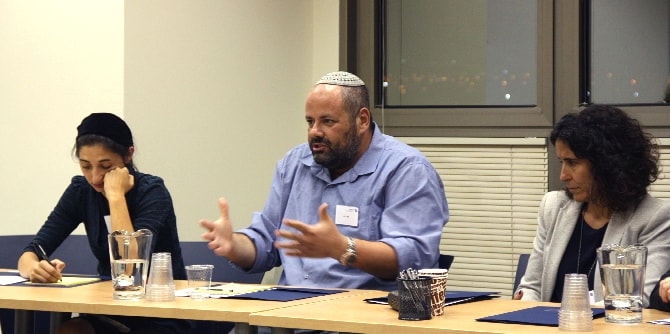

As part of the continuous and fruitful cooperation between the Beer Sheva municipality and the Mandel Center for Leadership in the Negev, a series of action group meetings are taking place in order to contribute to the promotion of
ru'ach (spirit, intellect, soul, essence) and humanities in the various systems in the Negev. Led jointly by
Dr. Hefzi Zohar,
Israel Sorek, and
Dr. Adi Nir Sagi, these meetings bring together thought leaders and action leaders from a diverse range of fields, including medicine, education, religion, media, culture, and community.

At the first meeting, participants discussed their motivation for joining the group and the need for strengthening values and the human spirit in their daily work. The emotions they expressed ranged from hope to great unease. The group read an excerpt from Immanuel Kant’s classic text “Answering the Question: What is Enlightenment?” – a text that provided a basis for discussion and dialogue about promoting real-world, “values-driven work” in various arenas.
At the second meeting, several members of the group presented texts and pieces of music they had chosen, and used them as the basis for a discussion about different aspects of the human spirit, and how these differ among different people. Next, there was a lecture by Shlomit Naim Naor, an educator, poet, and fellow at the Mandel School for Educational Leadership, who presented elements of her project, which is titled “Domestic Artists.” Shlomit conducted a group discussion about the capacity of art to improve people’s living conditions and communal life.
The meeting concluded with a series of smaller discussion circles in which the participants explored the question of how it is possible to base organizational routines and professional development on
ru'ach.

{kind=link}